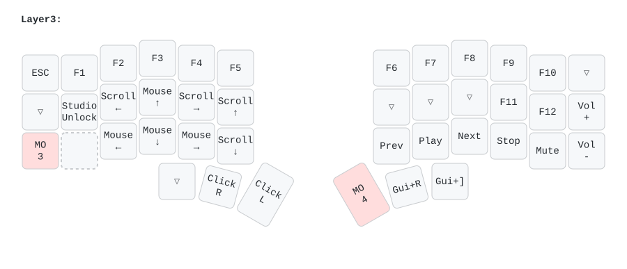

Wireless Corne – capas del teclado
Capa 0 · Base

Capa 1 · Lower (números y símbolos)

Capa 2 · Raise (navegación y macros)

Capa 3 · F-keys, mouse y Studio (MO 3)

Capa 4 · Bluetooth (MO 3 + pulgar derecho)
